The Rule 7.5 Zero Program: Sourcegraph finds, Parasoft decides
MISRA C:2025 Rule 7.5 taken to certified zero on a real open-source code base, then the same closed loop scaled to 1,095 findings across the top mechanical rules: the measured evidence, the scripts, the tenant queries, and the revertable branch topology

Embedded software consultancy, Parasoft and Perforce partner in Israel for over 20 years. This brief documents the ESL Sourcegraph + Parasoft zero-program demonstration.
linkedin.com/in/liezrowiceA closed loop with one decision point, executed on a real repo
The published ESL workflow, executed end to end on driftregion/iso14229
Evidence of record
Measures the problem (baseline), verifies the fix (zero or residual), re-measures on every pipeline run. Its report is the compliance artifact.
Scale and guard
Turns each mechanical class into a search query, drives the batch fix, and holds zero with a standing guard query.
The loop in nine steps, as executed on the demo
Parasoft opens the loop and closes it; Sourcegraph acts in between; zero is when the verifier says zero
Iteration is cheap by design
Each pass is a script edit plus a Batch Change preview: minutes of work, not another thousand hand edits. A non-zero scan goes straight back to step 4, exactly as the red loop shows.
Zero is when the verifier says zero
Sourcegraph never certifies its own fixes. The verification re-scan is the verdict on every pass, and its report is the compliance artifact.
The exact tool chain, versions, and invocation
Everything runs from one Windows host with WSL2 as the execution environment
Parasoft C/C++test Standard 2026.1.3
Linux build 2026.1.3 (internal 10.7.4), driven headless with cpptestcli, config builtin://MISRA C 2025, compiler gcc_12-64, licensed from the DTP server on the Windows host.
Sourcegraph Cloud, eswlab tenant
eswlab.sourcegraphcloud.com, site admin daniell, dedicated external service indexing the fork. Search API (/search/stream) and GraphQL for automation.
GitHub fork + branches
Upstream driftregion/iso14229 is never touched; all work lives on the fork's own branches. Verified: no PR exists upstream.

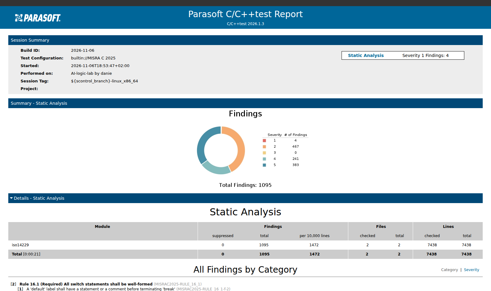
start_deactivated=true (re-activate in the legacy /pst console after a restart); after a Windows reboot the three Parasoft services must be restarted first; a full scan takes 15-20 minutes.Why iso14229: real automotive-relevant C, one honest catch
ISO 14229 (Unified Diagnostic Services) is the road-vehicle diagnostics layer every ECU speaks; the library is a C99 amalgamation, exactly the shape MISRA C programs look like
The upstream driftregion/iso14229 tree contains zero INTn_C/UINTn_C uses, so a fair Rule 7.5 demo needs a seeded branch: demo/rule75_seed/ adds 11 realistic calibration constants and call sites. The seeding commit is 3d3f7ab9, pushed to the fork branch misra-rule-7-5-seed and pinned there so Sourcegraph always shows the before-state.
The amalgamation itself (iso14229.c, 2,657 KB with the header) compiles standalone with gcc 12, which makes the Parasoft on-the-fly gcc -c invocation trivial.

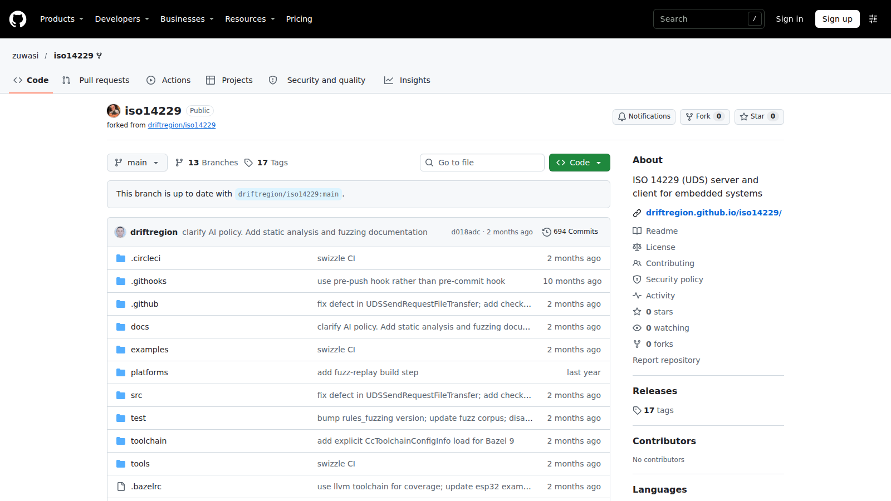
Eleven seeded candidates across three mechanical classes and two expert exclusions
The seed as committed (3d3f7ab9, branch misra-rule-7-5-seed); Rule 7.5 applies at call sites too
| Class | Instances | Automation |
|---|---|---|
| Negative inside macro, incl. signed minimum | 6 | value-preserving relocation; signed minimum to expert |
| Literal suffix inside macro (hex and decimal) | 4 | strip suffix, value preserved |
| Non-literal argument | 1 | expert decision, never automated |
| Total seeded candidates | 11 | 3 mechanical + 2 human classes; plus 2 compliant reference forms |
The seed baseline is 8 violations
C/C++test Standard 2026.1.3, builtin://MISRA C 2025, gcc_12-64, module demo/rule75_seed; cross-verified on 2025.2 with identical verdicts before the upgrade

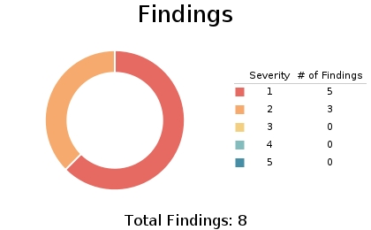
| Rule | Findings | Detail |
|---|---|---|
| Rule 7.5 (Mandatory) | 5 | 4 suffix + 1 non-literal |
| Rule 8.4 (Required) | 3 | missing header declarations |
The baseline is the contract: the verification scan must show the mechanical classes at zero, and the dashboard numbers come from this report.
The deck assumed negatives violate; the verifier disagrees, on two versions
The most valuable discovery of the pilot, found because the loop starts from the scanner, not from the standard's text
What the published plan assumed
Rule 7.5 bans the minus inside INTn_C(-N), so the demo would gate on negatives, suffixes, and non-literals: three automated classes.
What Parasoft actually flags
On both 2025.2 and 2026.1.3 with the MISRA C 2025 config: zero findings on any of the five INTn_C(-N) forms, including the signed minimum. Only suffix and non-literal forms are flagged (the 5 severity-1 findings).
The zero gate redefines itself from the scan
Zero means the suffix + non-literal classes reach zero. The v1 script still normalizes negatives (value-preserving, matches the compliant style), but negatives no longer gate.
Reconciliation becomes a demo highlight
Source inventory (11 candidates) vs scan (5 findings) diverges by design. The demo shows the divergence and explains it instead of hiding it: exactly what the reconciliation step exists to catch.
Three query lessons the tenant taught
eswlab tenant, license renewed 2026-11-06, fork indexed via a dedicated external service

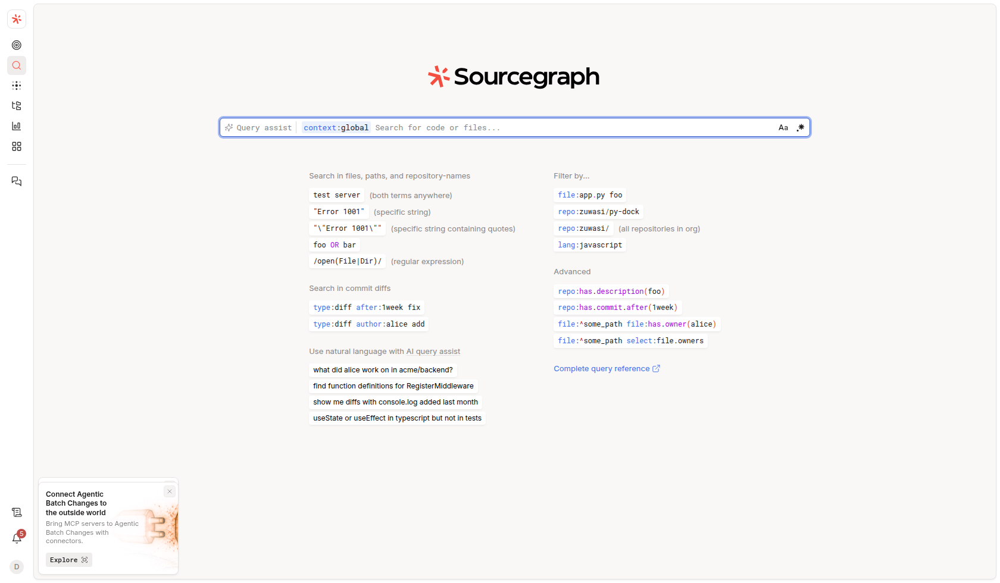
fork:yes is mandatory
The repo is a GitHub fork; without the fork:yes predicate every query silently returns zero because fork filtering excludes it by default.
patternType:regexp
The default is literal matching. Every structural pattern in this program is a regular expression and must opt in explicitly.
Zoekt cannot negate
Negated character classes ([^)]) silently return zero results. Every query uses positive classes instead of "anything but a paren".
The three class queries, run live on the seed branch
Each mechanical class is one query; counts below are what the tenant returned on 2026-11-06
| Class | Query (patternType:regexp) | Seed | Cleaned |
|---|---|---|---|
| Negative argument | (INT32_C|INT64_C|UINT32_C|UINT64_C)\(\s*-\s*[0-9]+\s*\) | 6 | 0 |
| Literal suffix | (\...)\(\s*(0[xX][0-9a-fA-F]+|[0-9]+)\s*[uUlL]+\s*\) | 4 | 0 |
| Non-literal argument | (\...)\(\s*[A-Za-z_][A-Za-z0-9_]*\s*\) | 1 | 0 |
| Signed minimum (expert) | INT32_C\(\s*-\s*2147483648\s*\) | 1 | 0 |

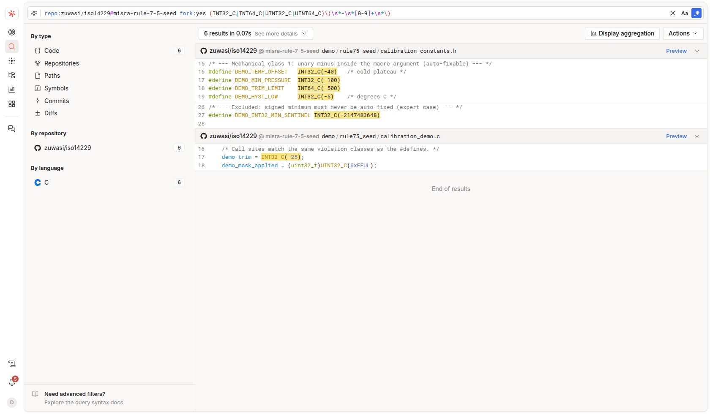
One combined guard query: 11 before, 0 after
The all-mechanical-classes query with lang:C so the fix script's own docstring cannot match; this is the exact query the PR gate runs

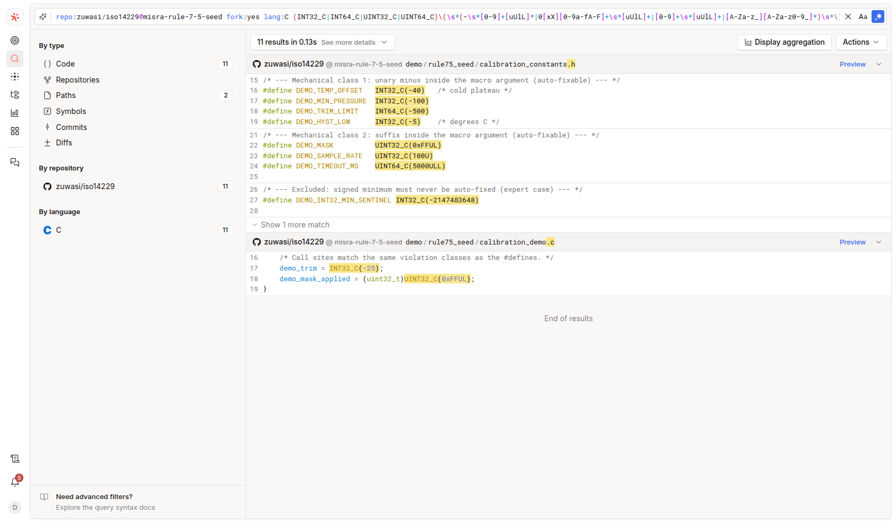

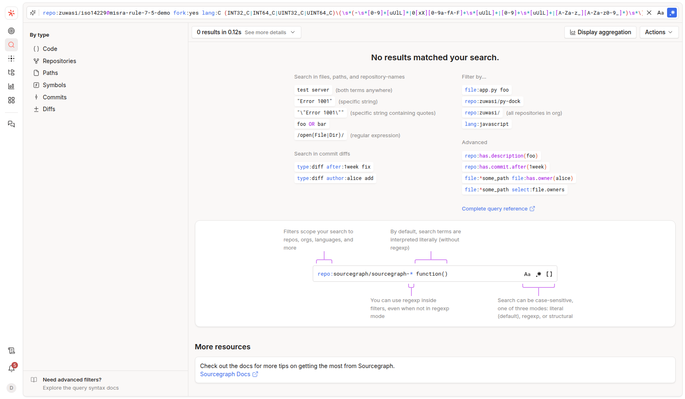
Inventory, scan, and search tell one story once you reconcile them
The step most teams skip, and the one that makes the demo credible
| View | Count | Why it differs |
|---|---|---|
| Source inventory (seeded candidates) | 11 | ground truth at source level, all shapes |
| Sourcegraph combined query (seed) | 11 | search sees every shape, including the negatives the verifier accepts |
| Parasoft baseline (seed) | 5 | verifier accepts the negative form on both tool versions (slide 07); flags suffix + non-literal only |
| Parasoft verification (seed) | 0 | all flagged classes zeroed by the v1 script + expert commit |
| Sourcegraph combined query (cleaned) | 0 | guard query goes green; Proof 1 for the hold-zero phase |
The v1 transform script: two value-preserving rewrites, three exclusions
iso14229/tools/rule75_v1.py, commit 0fc00476, fixture-tested before it ever touched the seed
Values identical before and after
The fixture covers every transform and every exclusion; the test asserts -40 stays -40, 0xFF stays 0xFF, and the excluded lines are untouched, then compiles the result.
Versioned scripts, never a one-off patch
Every Parasoft non-zero verification produces a v2, v3, ... of the script. The script is the reviewable, reusable unit; the demo branch is disposable.
What automation must not touch: the expert commit
Commit 2c1f6403 (+9 −4) closes the two exclusions and the three Rule 8.4 demo artifacts
| Commit | Branch | Content |
|---|---|---|
3d3f7ab9 | misra-rule-7-5-seed | seed: 11 candidates, pinned before-state |
0fc00476 | misra-rule-7-5-demo | v1 script + mechanical fixes (+89 −9) |
2c1f6403 | misra-rule-7-5-demo | expert fixes: exclusions + declarations |
Parasoft closes the loop: the seed is certified zero
Same command, same module, same config: 8 violations in, 0 violations out

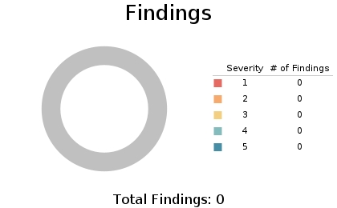
iso14229/reports/report.html, regenerated by the 2026.1.3 verification run. Zero suppressed findings, zero exclusions in the config: the seed demo is a genuine zero, not a filtered one.Parasoft enforces MISRA C 2025 and certifies the zero
The compliance pack in the test configuration: 388 of 388 MISRA C 2025 rules and directives enabled

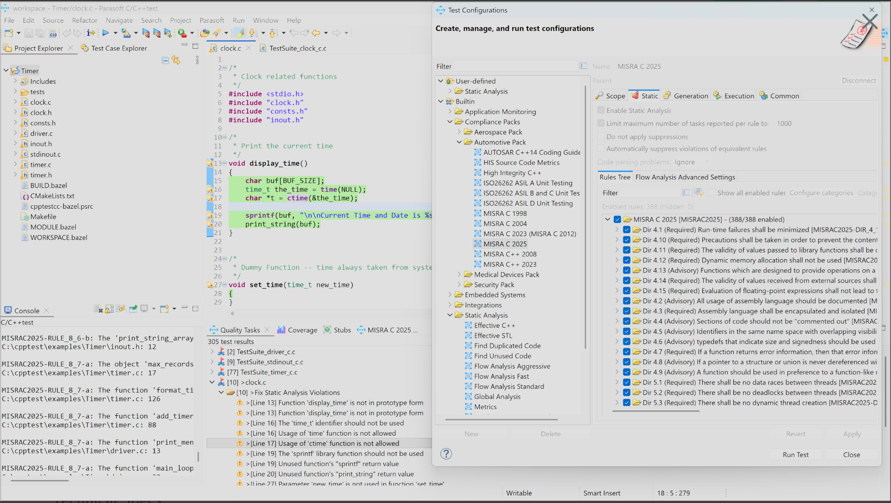
builtin://MISRA C 2025
The built-in compliance pack, no cherry-picking: every MISRA C 2025 rule and directive enabled, compiler profile gcc_12-64.
Same verdict on 2025.2 and 2026.1.3
The pilot was verified on both versions before the upgrade: suffix and non-literal forms flagged, negative-in-macro accepted.
The zero report is the artifact
The verification scan's HTML report is what auditors and certification bodies see; it is the evidence of record for the whole program.
Pilot dashboard: 8 → 0, measured
MISRA C 2025 Rule 7.5 cleanup, demo pilot on driftregion/iso14229, measured 2026-11-04, C/C++test Standard 2026.1.3
| Per-file zero proof (demo module) | Baseline | Verification |
|---|---|---|
calibration_constants.h | 4 | 0 |
calibration_demo.c | 1 | 0 |
The same loop on upstream code: 1,095 findings
Full amalgamation, 7,438 lines, no seed involved, MISRA C 2025 config, 2026.1.3
| Rule | Findings | Nature | Mechanical? |
|---|---|---|---|
| Rule 15.5 (single point of exit) | 383 | structural rewrites | no |
| Rule 15.6 (bodies must be blocks) | 82 | all 82 are assert-expansion artifacts | yes, one macro |
| Dir 4.6 (stdint typedefs) | 68 | type-word rewrites | yes |
| Rules 14.4 / 12.3 / 21.8 / 2.2 / 11.11 | 251 | mixed; 12.3, 21.8, 2.2 are largely assert artifacts | partly |
Three micro-scans to find the fix that actually zeroes 123 findings
All 82 Rule 15.6 and 41 Rule 21.8 findings trace to one macro: #define UDS_ASSERT(x) assert(x), because glibc's assert expands to an unbraced if
| Variant | Macro | 15.6 | 21.8 | Verdict |
|---|---|---|---|---|
| A (as shipped) | #define UDS_ASSERT(x) assert(x) | 2 / site | 1 / site | the 123-finding source |
| B (wrap only) | do { assert(x); } while (0) | 2 / site | 1 / site | does not help: glibc's assert still leaks the unbraced if |
| C (hook) | do { if (!(x)) { UDS_AssertFail(); } } while (0) | 0 | 0 | clean |
| D (abort) | hook calling abort() | 0 | 1 / site | Rule 21.8 covers abort too: "The 'abort' library function should not be used" |
video/rule-assert: one macro rewrite, 123 findings gone
Commit 2ed57bf9, stackable and revertable; the header gained a UDS_AssertFail hook any application can override

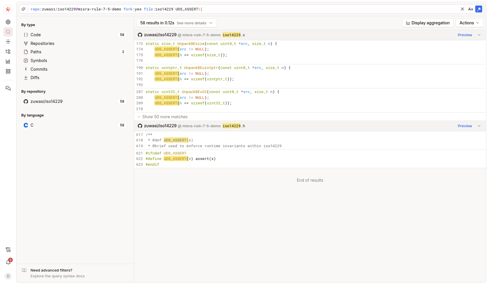
Branch video/dir-4-6: comment-aware type rewriting, 88 search hits to 17
Commit 2524ee36, script tools/dir46_typedefs.py: int→int32_t, unsigned→uint32_t, short→int16_t, long→int64_t, with long long, comments, and strings handled

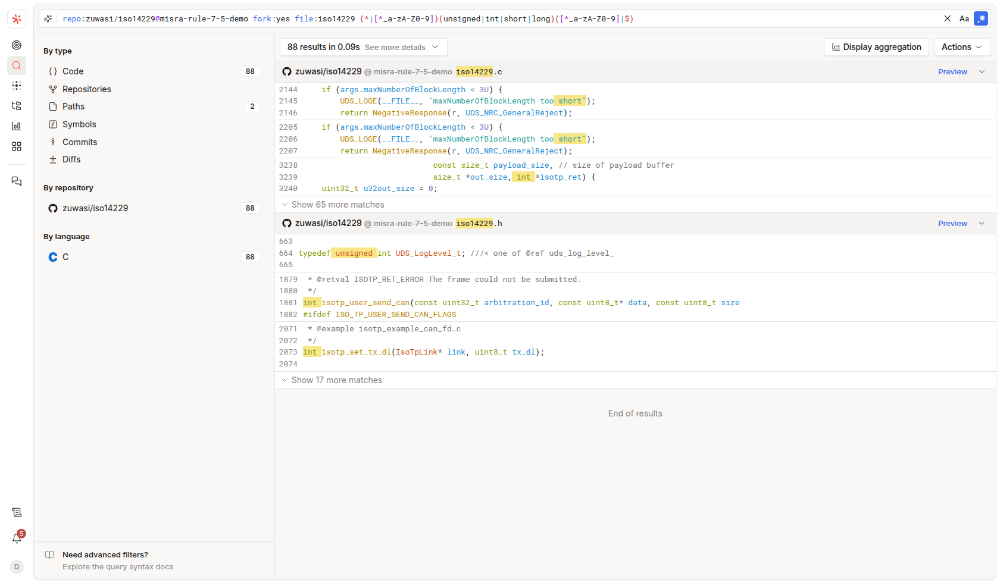

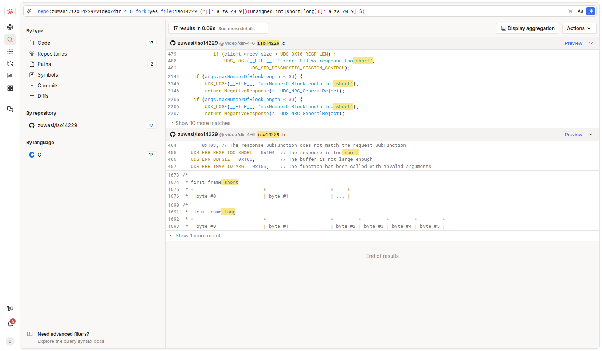
Branch video/rule-14-4: 34 implicit zero tests made explicit
Commits 3bbda370 + 7d1ce9ae, script tools/rule144_explicit_zero.py; != 0 is value-preserving for integer, enum, and pointer operands (0 is a null pointer constant)

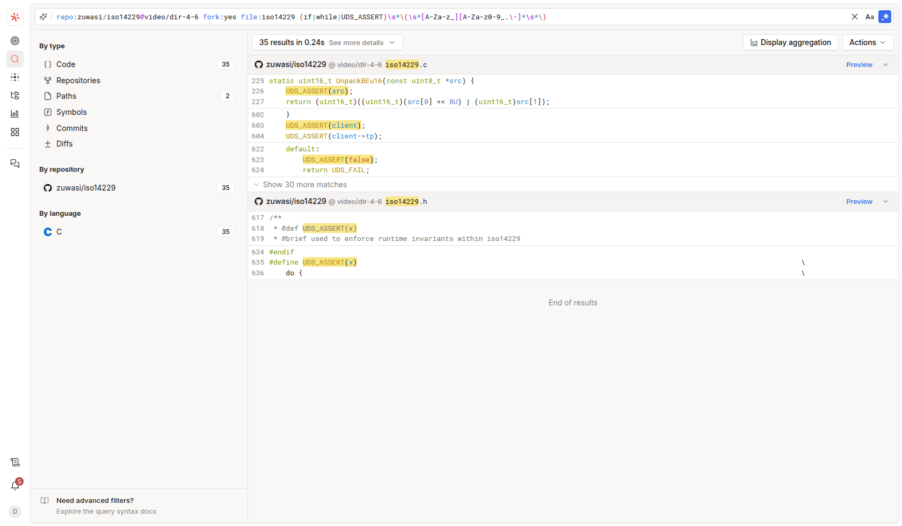

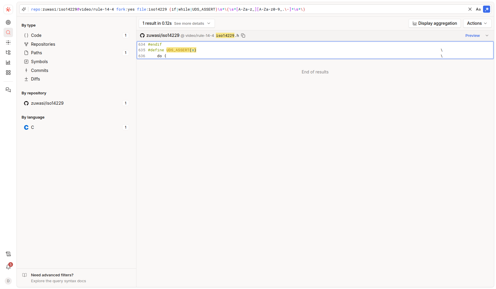
The loop closes at repo scale: 1,095 → 766
One verification scan on the tip branch (video/rule-14-4), same config, 7,456 lines, 0 suppressed

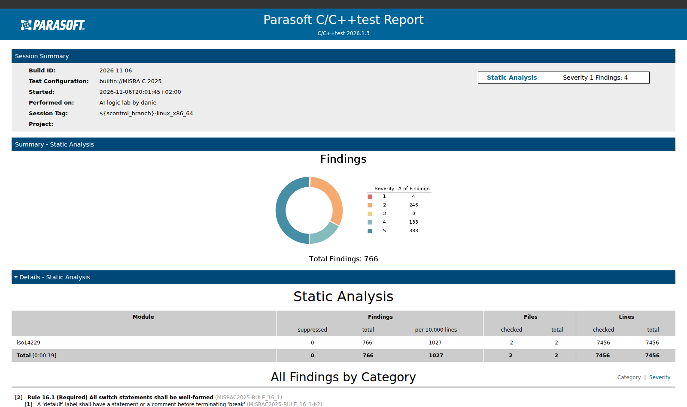
Per-rule evidence: where the 329 findings went
Extracted from the Parasoft XML reports of both scans, not from the HTML rendering
| Rule | Before | After | Delta | Why |
|---|---|---|---|---|
| Rule 15.6 (assert artifact) | 82 | 0 | -82 | UDS_ASSERT block-form macro (slide 17) |
| Dir 4.6 (stdint typedefs) | 68 | 0 | -68 | type rewrites (slide 18) |
| Rule 21.8 (assert/abort) | 41 | 0 | -41 | no assert, no abort: hook instead |
| Rule 12.3 + Rule 2.2 (assert artifacts) | 81 | 0 | -81 | side-effect and dead-code findings lived inside the assert expansion |
| Rule 14.4 (explicit zero tests) | 43 | 9 | -34 | 34 sites made explicit; 9 residuals to expert review |
| Rule 11.11 (typedefs removed casts) | 45 | 7 | -38 | side effect of the Dir 4.6 typedefs |
| Total | 1,095 | 766 | -329 |
One commit per branch: reversal is one command
No fix ever lands on a shared branch; the upstream repo is never touched

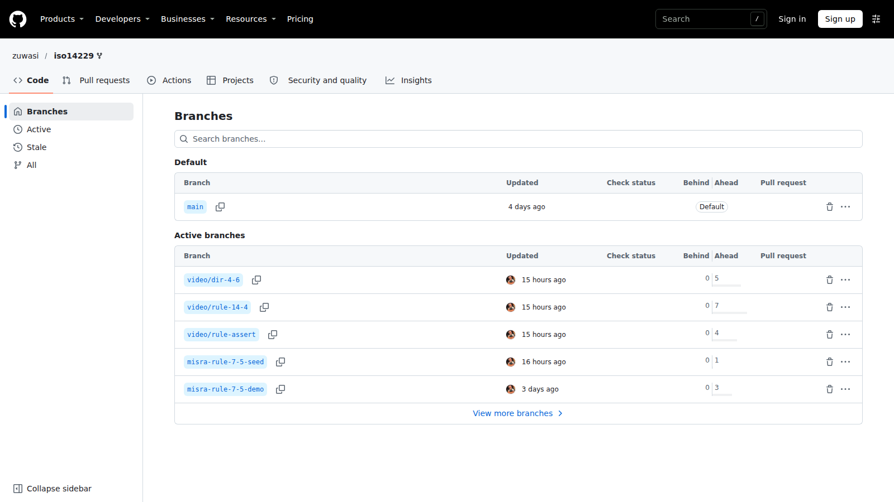
Agentic Batch Changes: licensed on the tenant, quota-gated today
The 2026-11-02 Sourcegraph update (agentic batch changes + MCP connectors) mapped onto this program
The full agent API exists
GraphQL exposes createBatchChangeAgent, createBatchChangeAgentThread, submitBatchChangeAgentThreadMessage, and tool-approval mutations. The feature is licensed; a prepared agent prompt is ready to run.
Deep Search quota
createBatchChangeAgent fails with "Deep Search quota exceeded". Agent runs consume Deep Search quota, which the tenant plan has exhausted. Until it clears, the recorded demo uses local batch scripts + branch publishing.
What they add to this loop
The agent can pull CI state (Buildkite, GitHub checks) into its own loop, plus ticket and docs context. The human keeps the draft-first review gate.
Parasoft stays the evidence of record
Whatever drives the edits (script, agent, or IDE), the decision point remains the Parasoft verification scan; Sourcegraph still owns find, fix-at-scale, and the hold-zero guard.
Holding zero: detect with Sourcegraph, enforce on the code host
Sourcegraph does not natively block PRs; it respects the code host's merge gates. The gate is therefore two parts: Sourcegraph detects, GitHub/GitLab enforces.
| Week | Milestone | Status |
|---|---|---|
| 1 | Pilot: seed module baseline 8, scripts v1, tenant queries, zero certified | executed 2026-11-04/06, seed-to-zero under one day |
| 2-3 | Scale: whole-repo campaign, three mechanical classes zeroed (1,095 to 766) | executed 2026-11-06 |
| 4+ | Standing gate: guard query in CI, Parasoft scan in pipeline, Code Monitor live | design fixed, Proof 1 done; wiring scheduled |
Run the same loop on your code base
The pattern generalizes: seed it, measure it with Parasoft, find it with Sourcegraph, fix it with a versioned script, verify zero, hold zero
ESL is an embedded software consultancy and Parasoft and Perforce partner in Israel for over 20 years. This demonstration used only open-source code, a Sourcegraph Cloud trial tenant, and Parasoft C/C++test Standard 2026.1.3.
eswlab.com · Contact ESL · Watch the recorded demo (2 min 47 s): youtube.com/watch?v=StzLdcFgW-E · Companion brief: Parasoft CUDA Bridge